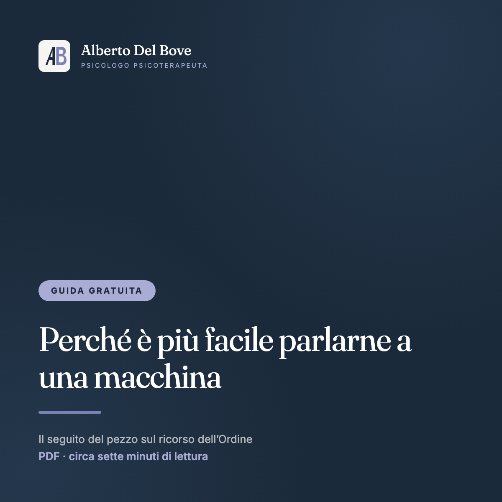

Ascolto della domanda
Prima di cercare risposte proviamo a capire insieme che cosa stai chiedendo davvero, a te stesso, agli altri e ai contesti in cui vivi, ed è spesso da qui che qualcosa comincia a cambiare.
Ogni richiesta d'aiuto contiene già una direzione. Insieme possiamo decifrarla.
Sono Alberto Del Bove, psicologo e psicoterapeuta psicoanalitico iscritto all'Albo del Lazio. Seguo adulti e coppie online, in tutta Italia e dall'estero, e in studio a Itri (LT).
Lavoro con chi attraversa ansia e attacchi di panico, depressione, burnout, difficoltà di coppia e nelle relazioni, o un momento di passaggio che non sa ancora nominare.
Il primo colloquio è gratuito se lo prenoti dal sito, dura 45 minuti e puoi farlo online o in studio.
Come lavoriamo
Qualunque modo tu scelga, il metodo resta lo stesso, e lo è anche il primo colloquio gratuito di 45 minuti.
In tutta Italia
Sedute in videochiamata sicura, da casa tua o da dove ti trovi, con lo stesso lavoro che si fa nella stanza e senza doverti spostare.
Itri (LT)
Via Luigi Pirandello 8, a pochi minuti da Formia, Gaeta, Fondi e Sperlonga, con parcheggio facile in zona.
Fuori dall'Italia
Psicoterapia online nella tua lingua madre, con orari concordati sul tuo fuso.
Per le coppie vale lo stesso, online o in studio, e in una pagina a parte spiego come funziona la terapia di coppia.
Su cosa lavoro
Lavoro con adulti e coppie, online o in studio, anche sulle difficoltà nelle relazioni, sui momenti di passaggio e sulle domande che non hanno ancora un nome, e in ogni caso si comincia dal primo colloquio.
Nessun salto nel buio
Sono quattro passi che non ti impegnano a nulla, perché sapere che cosa aspettarti fa già parte del prendersi cura.
Il primo colloquio è gratuito se lo prenoti dal sito, dura 45 minuti e non ti impegna a proseguire.
Chi sono

Il mio percorso nasce alla Sapienza di Roma, dove mi sono laureato in Psicologia Clinica dopo la triennale in Scienze Psicologiche. Dal 2018 sono psicologo abilitato e ho iniziato subito a lavorare su due fronti, la pratica clinica privata e il coordinamento di progetti in organizzazioni socio-sanitarie, dove ho imparato che il malessere delle persone non vive mai nel vuoto e prende forma dentro relazioni, contesti e culture organizzative precise.
Nel 2022 ho concluso la scuola di specializzazione quadriennale in Psicoterapia Psicoanalitica presso la SPS di Roma, formandomi nell'Analisi della Domanda, un approccio che non si ferma al sintomo e cerca il significato della richiesta d'aiuto dentro la storia e i contesti di chi la porta.
La terapia online la conosco dall'interno, perché in Unobravo sono stato psicoterapeuta, Clinical Team Lead e formatore ECM, e poi in BetterHelp Clinical Operations Manager per i mercati europei. Anni passati a curare la qualità dei percorsi di altri terapeuti mi hanno insegnato che cosa fa funzionare una seduta, anche attraverso uno schermo.
Te lo racconto perché, quando mi parli di burnout, di un capo difficile, di un lavoro che ti svuota o di una carriera all'estero, non ho bisogno di immaginare quel mondo, dato che ci ho lavorato dentro ogni giorno.
Se ti riconosci in queste parole, possiamo parlarne in un primo colloquio0+
anni di pratica clinica
0
lingue di lavoro
0
setting, online e in studio
Approccio terapeutico
Chi chiede aiuto porta con sé, insieme al sintomo, una storia, delle relazioni e un contesto. L'approccio psicoanalitico fondato sull'Analisi della Domanda lavora proprio lì, sul significato che l'ansia, i blocchi o la fatica assumono nella tua vita, perché la sofferenza possa diventare comprensione e la comprensione una possibilità di sviluppo.
Prima di cercare risposte proviamo a capire insieme che cosa stai chiedendo davvero, a te stesso, agli altri e ai contesti in cui vivi, ed è spesso da qui che qualcosa comincia a cambiare.
I sintomi parlano la lingua delle relazioni in cui viviamo, in famiglia, nella coppia e al lavoro. Per questo lavoriamo sul rapporto tra te e i gruppi a cui appartieni, più che su un'etichetta diagnostica.
Stare meglio conta, e conta anche imparare a leggere le situazioni e le relazioni in un modo che resti tuo quando la terapia sarà finita.
Strumenti interattivi gratuiti
Sono quattro brevi strumenti di auto-osservazione costruiti con criteri clinici, che riguardano la personalità, il peso reale del lavoro, l'attenzione e l'impulsività, e ciò che stai cercando. Sono gratuiti e anonimi e non chiedono registrazione, perché le risposte non lasciano mai il tuo dispositivo.
9 domande ispirate a C.G. Jung su dove trovi energia, come leggi il mondo e come decidi, che portano a uno di 8 profili con i suoi punti di forza e i suoi margini di crescita, senza etichette.
3 minuti 9 domande
8 situazioni concrete per misurare quanto il lavoro ti sta logorando, fra energie, distacco e recupero, con un punteggio su 24, quattro fasce di lettura e i segnali che conviene non ignorare.
2 minuti 8 domande
5 domande ispirate all'Analisi della Domanda per mettere a fuoco l'area della tua vita che sta chiedendo attenzione, che siano le relazioni, il lavoro, l'identità o la direzione da prendere.
2 minuti 5 domande
10 situazioni quotidiane ispirate ai questionari di screening dell'ADHD adulto, che non fanno una diagnosi ma ti aiutano a capire se vale la pena approfondire con un professionista.
3 minuti 10 domande
No, sono strumenti di auto-osservazione costruiti con criteri clinici e pensati per aprire una riflessione, non per classificarti. Una valutazione vera nasce solo dall'incontro con un professionista, e se un risultato ti colpisce il primo colloquio è il posto in cui approfondirlo.
Da nessuna parte, perché i test funzionano interamente nel tuo browser. Le risposte non vengono salvate, tracciate né inviate, quindi il risultato lo vedi solo tu e sei tu a decidere se condividerlo con me nel modulo di contatto. Se alla fine scegli di lasciare l'email, partono soltanto quell'indirizzo e il nome del test che hai appena fatto (mai le risposte né il risultato), così che le email che ricevi parlino del tema giusto; puoi disiscriverti quando vuoi.
Dai 2 ai 3 minuti ciascuno, e sono gratuiti. Puoi rifarli quante volte vuoi, e anche vedere come cambiano le tue risposte nel tempo ti dice qualcosa di te.
Puoi tenerlo per te come spunto oppure condividerlo con me con un clic, perché il pulsante sotto ogni risultato precompila il modulo di contatto. In quel caso il primo colloquio partirà da lì, da ciò che il test ha mosso in te più che dal punteggio.
Se lo prenoti dal sito dura 45 minuti, online o in studio a Itri, e ti rispondo entro 24-48 ore.
Risorse & Articoli
Brevi letture su temi che incontro ogni giorno, in terapia e nelle organizzazioni.

Lavoro & benessere
Più che una debolezza personale, il burnout è il segno di una relazione che si è ammalata tra la persona e l'organizzazione in cui lavora. Riconoscerne presto i segnali, come il cinismo, l'esaurimento e il distacco, aiuta a non considerarli normali.

Ansia
Attacchi di panico e ansia generalizzata spaventano, ma raramente arrivano «dal nulla», e spesso segnalano un conflitto tra ciò che viviamo e ciò che desideriamo che conviene ascoltare prima di provare a combatterlo.

Analisi della Domanda
Dietro «voglio smettere di stare male» c'è quasi sempre una richiesta più precisa, come essere visti, cambiare un rapporto o ritrovare una direzione, e la terapia comincia quando quella domanda trova le sue parole.

Vivere all'estero
Si può vivere benissimo in una seconda lingua e accorgersi, quando si tratta di dire il dolore, che le parole straniere pesano meno. Anche l'inconscio ha un accento, e in terapia la differenza si sente.

Vivere all'estero
L'espatrio viene raccontato come un'avventura, ed è anche un lutto silenzioso per la lingua, i riti e le appartenenze che si lasciano. Dare un nome a questa fatica aiuta ad abitare davvero il posto in cui si è scelto di vivere.

Attenzione & trauma
Non tutta la disattenzione ha la stessa storia, e in chiave psicoanalitica distrarsi e non fermarsi mai possono essere anche un modo per non sentire, per cui capire da che cosa ci si distrae cambia il percorso di cura.

Psicologia e scuola
Una proposta di legge vuole due ore al mese con lo psicologo per tutti gli studenti. L'idea è buona, ma l'ascolto prescritto rischia di diventare un adempimento.
Leggi l'articolo
Psicologia e scuola
Cinque milioni per gli sportelli d'ascolto nelle scuole del Lazio sono una buona notizia, ma le 288 ore l'anno per un intero istituto dicono più della cifra stanziata.
Leggi l'articolo
Psicologia & tecnologia
L'Ordine degli Psicologi è andato in tribunale contro una piattaforma che offre sedute condotte da terapeuti generati con l'IA. La notizia riguarda la categoria meno di quanto sembri, e molto di più chiunque abbia aperto un'app alle due di notte.

Psicologia & tecnologia
Il seguito del pezzo sul ricorso dell'Ordine. Se confidarsi con un'IA è più facile, è perché parlare a una persona costa qualcosa, e vale la pena chiedersi che cosa, esattamente.

Su di me
Psicoterapeuta e People Manager sono due parole che sembrano lontane e che nella mia storia, invece, si sono sempre parlate, ed è da lì che racconto come sono arrivato fin qui.
Contatti & Sede
Più che un questionario, questo è il primo spazio in cui la tua domanda viene ascoltata, e puoi raccontarmi quello che ti va, nel modo in cui ti viene. Ti ricontatto entro 24-48 ore per fissare un primo colloquio conoscitivo, online o in studio, che se lo prenoti da qui è gratuito e dura 45 minuti.
Lo studio si trova a Itri, in provincia di Latina, facilmente raggiungibile da Formia, Gaeta, Fondi, Sperlonga e da tutto il sud pontino.
Le sedute online si svolgono in videochiamata su piattaforme sicure, con la stessa riservatezza dello studio e in fasce orarie ampie, che vanno bene anche a chi vive in un altro fuso orario.
Il primo colloquio è gratuito se lo prenoti dal sito, e dura 45 minuti. Serve a capire insieme di cosa hai bisogno; l'onorario delle sedute successive, la frequenza e le regole sulle disdette te li dico lì, prima di qualunque impegno, e le sedute sono detraibili come spese sanitarie.
Una seduta dura di norma circa 50 minuti. La frequenza, di solito settimanale, non è una regola imposta, e la definiamo insieme in base a ciò che porti e alla fase del percorso.
Ci colleghiamo in videochiamata su una piattaforma sicura all'orario concordato, e ti servono solo una connessione stabile e uno spazio riservato in cui parlare liberamente. La riservatezza è la stessa dello studio, perché la garantisce il segreto professionale.
Lo psicologo è laureato in psicologia e abilitato dall'Ordine; lo psicoterapeuta ha in più una specializzazione quadriennale che lo abilita a curare con la psicoterapia. Io sono psicologo dal 2018 e psicoterapeuta psicoanalitico, specializzato alla SPS di Roma nel 2022.
Sì. Tutto ciò che emerge in seduta è protetto dal segreto professionale, a cui sono tenuto per legge e per deontologia. Anche i tuoi dati di contatto sono trattati nel rispetto del GDPR, solo per ricontattarti.
Sì, perché le sedute di psicoterapia sono prestazioni sanitarie e la fattura è detraibile come spesa sanitaria nella dichiarazione dei redditi, secondo le regole vigenti, e per ogni seduta riceverai regolare fattura.
Per i colleghi
La supervisione clinica, i compendi che scrivo per chi lavora in stanza, PsicoVoice, il mio curriculum e i case study del Master stanno in una pagina a parte, per non mescolarli con ciò che serve a chi cerca una terapia.